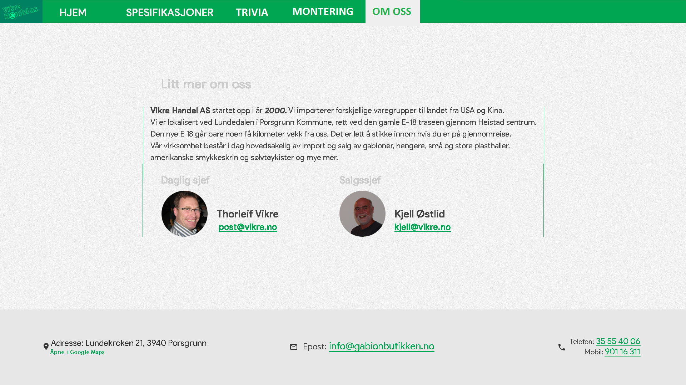

Administrative detaljer
Vår klient og kontaktperson er Thorleif Fluer Vikre, eieren av Vikre Handel AS.
Hensikt, mål og målgruppe
Hensikten med denne nettsiden er å selge gabioner. Dermed har vi som mål med nettsiden å gi god informasjon om gabioner slik at kunder blir overbevist om å handle hos oss, og også å stille med trygg og god kontaktinformasjon om hvordan man kan kjøpe gabioner fra oss. Dette betyr at det er en nødvendighet at nettsiden er grafisk tiltalende - brukeren må kunne føle seg trygg, og være komfortabel med å navigere nettsiden vår, slik at vi overtaler de potensielle kundene våre til å kjøpe fra oss.
Navigasjonsstruktur
Vi kommer til å ha en navigasjonsbar på toppen av siden vår, denne navigasjonsbaren kommer alltid til å være synlig og tilgjengelig nesten helt i toppen av nettleseren vår. Navigasjonsbaren kommer til å inneholde linker til de viktigste sidene i prosjektet vårt.
- Hjem - startsiden vår
- Trivia - eksempler på bruk av gabioner og diverse informasjon om gabioner
- Spesifikasjoner - valg av typer og bestilling
- Montering - videoer og tekstguider
- Om oss - kontaktinformasjon
Noen av nettsidene beskrevet over kommer også til å ha undersider som ikke er synlige i navigasjonsbaren. Siden montering vil stort sett være en meta-side som linker til forskjellige monteringsvideoer og tekstdokumenter. Hjemmesiden vil også fungere på samme måte. Her vil man få en oversikt over de forskjellige undersidene, og deres funksjon - hjemmesiden vil altså inneholde en beskrivelse om hva spesifikasjoner-siden inneholder, og en link til den, og det samme for sidene for eksempler, montering og om oss. Spesifikasjoner vil også linke videre til om-oss-siden, dette fordi bestillinger må foregå over telefon eller mail, og ikke automatisk over nettet.
Det er mulig at undersider som for eksempel monteringsvideoene vil være tilgjengelige fra navigasjonsmenyen, ved hjelp av en drop-down-meny programmert i JavaScript. Dette er noe vi vil se an videre når vi får tilbakemelding fra Thorleif - det kan bli uryddig med veldig mange undermenyer, men hvis Thorleif ikke produserer så mange monteringsvideoer, vil det være fullt mulig å få til et ryddig design med undermenyer.
Layout og utseende
Vi ønsket å ha et relativt standard og lettforståelig design, da flesteparten av våre kunder kommer fra grupper som sannsynligvis ikke er blandt de mest teknologisk erfarne. I toppen av nettsiden har vi en navigasjonsbar som linker til alle sidene våre. Logoen vises også i navigasjonsbaren, øverst til venstre, og den linker også til hjemmesiden. I bunnen av nettsiden har vi en sticky-footer. Her viser vi diverse kontaktinformasjon. Dette vises også på om-oss-siden, men i footeren er det lett tilgjengelig på alle sider uten ekstra informasjon om firmaets historie. Vi mener at denne enkle navigasjonsstrukturen elegant oppnår målene våre med nettsiden. Den blir enkel å navigere, og man får med en gang en oversikt over de forskjellige tjenestene nettsiden tilbyr.
| Element | Bakgrunnsfarge | Tekstfarge | Font |
|---|---|---|---|
| Header | #00A651 | #FFFFFF | Open Sans, sans-serif |
| Aktiv header | #FFFFFF | #00A651 | Open Sans, sans-serif |
| Vanlig tekst | N/A | #000000 | Open Sans, sans-serif |
| Linker | N/A | #00A651 | Open Sans, sans-serif |
| Footer | #E7E7E7 | #000000 | Open Sans, sans-serif |
Headeren skal være på toppen av siden og inneholde linker til alle de andre hovedsidene på nettstedet på en rekke.
Footeren skal være på bunnen av siden og inneholde mobilnummer, email og adressen.
Innhold
This is the longest section of your document. For every page, you will need to give a text description of the content of the page as well as an image of the mockup of the page. The text describes what goal(s) this page fulfills, and how design decisions specific to it contribute into fulfilling such goals. The reason why you should describe the content is that you might not have yet received the actual content from the client and in your mockup of the page you will be using fake text, fake images, etc. While the content can be fake, you should try to use meaningful headings and captions to convey its meaning. Finally you should describe the design decisions that are unique for this particular page (if any). Here is an example: Images of e-board members are stored as thumbnails to reduce the loading time of the page. They appear in a grid format on the left side of the page. Each thumbnail is of size 150x150. When clicked, they will open as larger images (320x480) on the right side of the page, surrounded by text describing the member's duties and reasons for joining the org. The chosen thumbnail will have a surrounding border in gray color, to provide visual feedback to the user for the selected content.Hjem
Denne siden skal fungere som en landingsside for brukeren. I bakgrunnen av siden har vi et slideshow som viser forskjellige bilder av gabioner. Midt på siden har vi to sentrerte paragrafer som lærer brukeren om hva gabioner er for noe, og en les-mer-knapp som tar brukeren videre til trivia-siden. Slideshowet vil være visuelt tilfredsstillende, men samtidig også informere potensielle kjøpere som ikke er godt kjent med gabioner om hva det er for noe. Derfor mener vi designet til denne siden gir et godt grunnlag for videre overbevisning av våre potensielle kunder.
Spesifikasjoner
Denne siden skal inneholde informasjon om de ulike gabionmodellene. Informasjonen skal vises ved hjelp av en liste over de ulike gabionmodellene. Når man klikker på en av de ulike gabionmodellene får man opp en illustrasjon over modellen, informasjonstekst, og en knapp som legger den til i lista over gabioner som ønskes kjøpt. Dette er altså et klassisk tab-design. Dette interaktive designet håper vi vil hjelpe brukeren med å bestemme seg for hvilken type gabioner som er mest aktuell, og med å hjelpe brukeren med å holde styr på de gabionene som ønskes kjøpt.
Trivia
Her skal vi demonstrere gabiner i mange ulike bruksområder og dele fakta om gabioner, slik at brukeren får en enda bredere i hva gabioner kan brukes til. Til høyre på siden har vi forskjellige bilder av gabioner, mens vi til venstre på siden har tekst-informasjon om gabioner.
Montering
Til venstre på denne siden skal vi ha en tekstbeskrivelse av teknikken bak å montere gabioner. Til høyre har vi en illustrasjon av det nåværende steget i prosessen. En knapp under illustrasjonen lar deg navigere mellom de forskjellige stegene i vår trinn-for-trinns interaktive opplæringsprosess.
Om oss
På toppen av hoveddelen av siden er det noen paragrafer med tekst som introduserer selskapet Vikre Handel og selskapets historie. Under er det bilder av de ansatte i selskapet, og kontaktinformasjon. Denne siden skal hovedsaklig bestå av kontaktinformasjon, men også noe informasjon om selskapet Vikre Handel.
Minstekrav
Vi har planlagt en god del JavaScript-funksjonalitet. Hver av oss får ansvaret for en viss del av JavaScript-funksjonaliteten.
- Andreas får ansvaret for å implementere JavaScript-tabs på spesifikasjoner-siden. Man skal kunne klikke på en bestemt type gabioner og så bli vist informasjon om den typen gabioner.
- Johannes får ansvaret for å implementere en karusell på forsiden, som viser forskjellige bilder av gabioner i rotasjon.
- Balázs får ansvaret for å lage en dynamisk tutorial som viser hvordan man monterer gabioner.
- Torjus får ansvaret for å legge til funksjonalitet som gjør at man kan velge gabioner fra gabioner-tabbene. Disse blir da lagret i nettleseren slik at de overlever en side-reload. De skal vises til brukeren under gabioner-tabbene, slik at brukeren får en slags handleliste som for eksempel skal kunne leses opp over telefon. Man skal også kunne generere en email som inneholder en oversikt over de typene gabioner brukeren ønsker å kjøpe, og man skal kunne eksportere mailen som rå tekst hvis man ikke ønsker å sende mailen med én gang.
Plan
Vi har brukt GitHub under designprosessen, og vi kommer til å fortsette å bruke GitHub utover kodefasen, da dette forenkler samarbeidsprosessen vår. Vi planlegger delegere ansvaret for diverse deler av nettsiden til forskjellige personer, slik at arbeidsmengden blir omtrent den samme på alle personene, men siden vi bruker GitHub kommer vi selvsagt til å følge med på hva de andre på gruppa gjør og kommentere og komme med tilbakemelding og hjelp.
Det første vi tar sikte på å bli ferdig med er designet vårt. Vi vil implementere en grunnleggende CSS-fil slik at alle de sidene vi arbeider på videre har det samme grunnleggende designet, og alt relatert til footeren og headeren skal styles ferdig fortløpende. Deretter er det ikke så farlig med rekkefølgen de neste sidene blir ferdige i, men vi vil prioritere arbeidet med spesifikasjoner-siden og montering-siden, da disse vil ha en god del JavaScript-funksjonalitet som vi ønsker å komme tidlig i gang med. Når det kommer til innhold er det Andreas som er vår primære bedriftskontakt. Han er ansvarlig for å få tak i videomateriale, bilder og tekst fra Thorleif. Hvis dette ikke blir gitt til oss i tide, kommer vi til å bruke placeholder-tekst.
Informasjon som må hentes fra bedriften
- Bilder til karusellen på hjemmesiden.
- Bilder og tekst til monteringssiden.
- Bilder og tekst til spesifikasjonersiden.
- Bilder og tekst til triviasiden.
- Vi må finne ut om Thorlef ønsker en ny logo eller ikke.
Mappestruktur
-
assets
-
css
- base.css
-
js
- specifications.js - inneholder både tabs og mailgenerator
- tutorials.js - interaktiv tutorial
- homepage.js - karusell
-
img
-
about
- thorleif.jpg - allerede skaffet
- kjell.jpg - allerede skaffet
- carousel - karusellbilder fra firma - Andreas
- usage - veiledningsbilder fra firma - Andreas
- specs - illustrasjonsbilder fra firma - Andreas
- logo.png - allerede skaffet
-
about
-
css
- index.html - Johannes
- bruk.html - Torjus
- montering.html - Balázs
- om.html - Andreas
Deadlines
Headeren og footeren og den grunnleggende CSS-fila skal bli ferdig innen den første uka, 16. oktober. Resten av HTML-sidene skal bli ferdig innen uken etter det igjen, 23. oktober. Den tredje uka skal vi gjøre ferdig JavaScript-filene, 30. oktober. Vi skal også bli ferdig med P3 til denne dagen. Deretter har vi til 13. november med å ta igjen det tapte hvis vi blir liggende bak skjema, og resten av tiden fram til fristen skal brukes til å teste nettsiden og til å finpusse P4.
Testingsfasen
Alle er ansvarlige under testingsfasen.